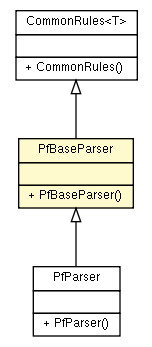

fr.univrennes1.cri.jtacl.equipments.openbsd
Class PfBaseParser

java.lang.Object
 org.parboiled.BaseActions<V>
org.parboiled.BaseParser<T>
fr.univrennes1.cri.jtacl.lib.misc.CommonRules<java.lang.Object>
fr.univrennes1.cri.jtacl.equipments.openbsd.PfBaseParser
org.parboiled.BaseActions<V>
org.parboiled.BaseParser<T>
fr.univrennes1.cri.jtacl.lib.misc.CommonRules<java.lang.Object>
fr.univrennes1.cri.jtacl.equipments.openbsd.PfBaseParser
- All Implemented Interfaces:
- org.parboiled.ContextAware<java.lang.Object>
- Direct Known Subclasses:
- PfParser
public class PfBaseParser
- extends CommonRules<java.lang.Object>
Base rule definition for the parser.
- Author:
- Patrick Lamaiziere
|
Field Summary |
static java.lang.String |
IDENT
|
static java.lang.String |
SPECIALS
|
| Methods inherited from class org.parboiled.BaseParser |
ACTION, Any, Ch, CharIgnoreCase, CharRange, CharSet, CharSet, CharSet, DOWN, DOWN2, DOWN3, DOWN4, DOWN5, DOWN6, Empty, Eoi, FirstOf, FirstOf, FromCharArray, FromCharLiteral, FromStringLiteral, newInstance, OneOrMore, Optional, Sequence, Sequence, String, String, StringIgnoreCase, StringIgnoreCase, Test, TestNot, ToRule, ToRules, UP, UP2, UP3, UP4, UP5, UP6, ZeroOrMore |
| Methods inherited from class org.parboiled.BaseActions |
character, character, chars, chars, currentChar, getContext, hasError, inPredicate, lastChar, lastNode, lastText, lastValue, node, nodeByLabel, nodes, nodesByLabel, nodeSuppressed, prevChar, prevEnd, prevStart, prevText, prevValue, set, set, setContext, text, text, texts, texts, value, value, value, values, values |
| Methods inherited from class java.lang.Object |
clone, equals, finalize, getClass, hashCode, notify, notifyAll, toString, wait, wait, wait |
SPECIALS
public static final java.lang.String SPECIALS
- See Also:
- Constant Field Values
IDENT
public static final java.lang.String IDENT
- See Also:
- Constant Field Values
PfBaseParser
public PfBaseParser()
ALL
public org.parboiled.Rule ALL()
ALLOWOPTS
public org.parboiled.Rule ALLOWOPTS()
ALTQ
public org.parboiled.Rule ALTQ()
ANCHOR
public org.parboiled.Rule ANCHOR()
ANTISPOOF
public org.parboiled.Rule ANTISPOOF()
ANY
public org.parboiled.Rule ANY()
BANDWIDTH
public org.parboiled.Rule BANDWIDTH()
BINATTO
public org.parboiled.Rule BINATTO()
BITMASK
public org.parboiled.Rule BITMASK()
BLOCK
public org.parboiled.Rule BLOCK()
BLOCKPOLICY
public org.parboiled.Rule BLOCKPOLICY()
CBQ
public org.parboiled.Rule CBQ()
CODE
public org.parboiled.Rule CODE()
FRAGCROP
public org.parboiled.Rule FRAGCROP()
DEBUG
public org.parboiled.Rule DEBUG()
DIVERTPACKET
public org.parboiled.Rule DIVERTPACKET()
DIVERTREPLY
public org.parboiled.Rule DIVERTREPLY()
DIVERTTO
public org.parboiled.Rule DIVERTTO()
DROP
public org.parboiled.Rule DROP()
FRAGDROP
public org.parboiled.Rule FRAGDROP()
DUPTO
public org.parboiled.Rule DUPTO()
FASTROUTE
public org.parboiled.Rule FASTROUTE()
FILENAME
public org.parboiled.Rule FILENAME()
FINGERPRINTS
public org.parboiled.Rule FINGERPRINTS()
FLAGS
public org.parboiled.Rule FLAGS()
FLOATING
public org.parboiled.Rule FLOATING()
FLUSH
public org.parboiled.Rule FLUSH()
FOR
public org.parboiled.Rule FOR()
FRAGMENT
public org.parboiled.Rule FRAGMENT()
FROM
public org.parboiled.Rule FROM()
GLOBAL
public org.parboiled.Rule GLOBAL()
GROUP
public org.parboiled.Rule GROUP()
HFSC
public org.parboiled.Rule HFSC()
HOSTID
public org.parboiled.Rule HOSTID()
ICMPTYPE
public org.parboiled.Rule ICMPTYPE()
ICMP6TYPE
public org.parboiled.Rule ICMP6TYPE()
IFBOUND
public org.parboiled.Rule IFBOUND()
IN
public org.parboiled.Rule IN()
INCLUDE
public org.parboiled.Rule INCLUDE()
INET
public org.parboiled.Rule INET()
INET6
public org.parboiled.Rule INET6()
KEEP
public org.parboiled.Rule KEEP()
LABEL
public org.parboiled.Rule LABEL()
LIMIT
public org.parboiled.Rule LIMIT()
LINKSHARE
public org.parboiled.Rule LINKSHARE()
LOAD
public org.parboiled.Rule LOAD()
LOG
public org.parboiled.Rule LOG()
LOGINTERFACE
public org.parboiled.Rule LOGINTERFACE()
MATCH
public org.parboiled.Rule MATCH()
MAXIMUM
public org.parboiled.Rule MAXIMUM()
MAXMSS
public org.parboiled.Rule MAXMSS()
MAXSRCCONN
public org.parboiled.Rule MAXSRCCONN()
MAXSRCCONNRATE
public org.parboiled.Rule MAXSRCCONNRATE()
MAXSRCNODES
public org.parboiled.Rule MAXSRCNODES()
MAXSRCSTATES
public org.parboiled.Rule MAXSRCSTATES()
MINTTL
public org.parboiled.Rule MINTTL()
MODULATE
public org.parboiled.Rule MODULATE()
NAT
public org.parboiled.Rule NAT()
NATANCHOR
public org.parboiled.Rule NATANCHOR()
NATTO
public org.parboiled.Rule NATTO()
NO
public org.parboiled.Rule NO()
NODF
public org.parboiled.Rule NODF()
NOROUTE
public org.parboiled.Rule NOROUTE()
NOSYNC
public org.parboiled.Rule NOSYNC()
ON
public org.parboiled.Rule ON()
OPTIMIZATION
public org.parboiled.Rule OPTIMIZATION()
OS
public org.parboiled.Rule OS()
OUT
public org.parboiled.Rule OUT()
OVERLOAD
public org.parboiled.Rule OVERLOAD()
PASS
public org.parboiled.Rule PASS()
PFLOW
public org.parboiled.Rule PFLOW()
PORT
public org.parboiled.Rule PORT()
PRIORITY
public org.parboiled.Rule PRIORITY()
PRIQ
public org.parboiled.Rule PRIQ()
PROBABILITY
public org.parboiled.Rule PROBABILITY()
PROTO
public org.parboiled.Rule PROTO()
QLIMIT
public org.parboiled.Rule QLIMIT()
QUEUE
public org.parboiled.Rule QUEUE()
QUICK
public org.parboiled.Rule QUICK()
RANDOM
public org.parboiled.Rule RANDOM()
RANDOMID
public org.parboiled.Rule RANDOMID()
RDR
public org.parboiled.Rule RDR()
RDRANCHOR
public org.parboiled.Rule RDRANCHOR()
RDRTO
public org.parboiled.Rule RDRTO()
REALTIME
public org.parboiled.Rule REALTIME()
REASSEMBLE
public org.parboiled.Rule REASSEMBLE()
RECEIVEDON
public org.parboiled.Rule RECEIVEDON()
REPLYTO
public org.parboiled.Rule REPLYTO()
REQUIREORDER
public org.parboiled.Rule REQUIREORDER()
RETURN
public org.parboiled.Rule RETURN()
RETURNICMP
public org.parboiled.Rule RETURNICMP()
RETURNICMP6
public org.parboiled.Rule RETURNICMP6()
RETURNRST
public org.parboiled.Rule RETURNRST()
ROUNDROBIN
public org.parboiled.Rule ROUNDROBIN()
ROUTE
public org.parboiled.Rule ROUTE()
ROUTETO
public org.parboiled.Rule ROUTETO()
RTABLE
public org.parboiled.Rule RTABLE()
RULE
public org.parboiled.Rule RULE()
RULESET_OPTIMIZATION
public org.parboiled.Rule RULESET_OPTIMIZATION()
SCRUB
public org.parboiled.Rule SCRUB()
SET
public org.parboiled.Rule SET()
SETTOS
public org.parboiled.Rule SETTOS()
SKIP
public org.parboiled.Rule SKIP()
SLOPPY
public org.parboiled.Rule SLOPPY()
SOURCEHASH
public org.parboiled.Rule SOURCEHASH()
SOURCETRACK
public org.parboiled.Rule SOURCETRACK()
STATE
public org.parboiled.Rule STATE()
STATEDEFAULTS
public org.parboiled.Rule STATEDEFAULTS()
STATEPOLICY
public org.parboiled.Rule STATEPOLICY()
STATICPORT
public org.parboiled.Rule STATICPORT()
STICKYADDRESS
public org.parboiled.Rule STICKYADDRESS()
SYNPROXY
public org.parboiled.Rule SYNPROXY()
TABLE
public org.parboiled.Rule TABLE()
TAG
public org.parboiled.Rule TAG()
TAGGED
public org.parboiled.Rule TAGGED()
TBRSIZE
public org.parboiled.Rule TBRSIZE()
TIMEOUT
public org.parboiled.Rule TIMEOUT()
TO
public org.parboiled.Rule TO()
TOS
public org.parboiled.Rule TOS()
TTL
public org.parboiled.Rule TTL()
UPPERLIMIT
public org.parboiled.Rule UPPERLIMIT()
URPFFAILED
public org.parboiled.Rule URPFFAILED()
USER
public org.parboiled.Rule USER()
PfKeyword
public org.parboiled.Rule PfKeyword()
- Matches a keyword
- Returns:
- a Rule.
PfAtom
public org.parboiled.Rule PfAtom()
- Matches an atom: a string delimited by specials.
- Returns:
- a Rule.
PfSeparators
public org.parboiled.Rule PfSeparators()
WhiteSpace
public org.parboiled.Rule WhiteSpace()
- Description copied from class:
CommonRules
- Matches white space: ' ' or tabulation.
- Overrides:
WhiteSpace in class CommonRules<java.lang.Object>
- Returns:
- a
Rule
NextIsSeparator
public org.parboiled.Rule NextIsSeparator()
- Tests if the next input is a separator.
- Returns:
- a Rule
PfIdent
public org.parboiled.Rule PfIdent()
- Matches an ident: a string with alpha characters or '_'
- Returns:
- a Rule.
Copyright © 2010. All Rights Reserved.